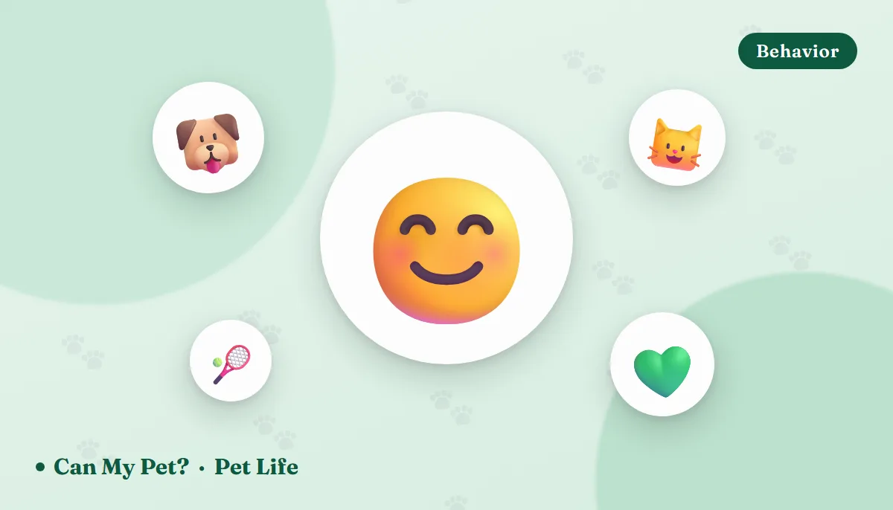

How to Tell If Your Pet Is Happy: 12 Signs Vets Look For

Nobody can ask a dog how his week went. What we can do is what veterinary behaviorists do — watch the body, the appetite, the sleep and the small choices a pet makes when nobody is asking anything of it. Contentment in animals isn't one dramatic signal. It's a pattern of ordinary, repeated behaviors: a loose body, an easy appetite, curiosity about the world, and a willingness to come find you. Here's how to read that pattern in your own pet — and the quiet signs that say something has slipped.
Start with your pet's own baseline
There is no universal happy pet. A Greyhound that sleeps eighteen hours a day and a terrier that vibrates through breakfast can be equally content. What matters is your animal's normal. Spend a week noticing how much your pet sleeps, how quickly it finishes a meal, where it chooses to lie, how often it greets you and how long it takes to settle after the doorbell. That baseline is the single most useful welfare tool you own, and it's the reason owners often spot illness days before a vet exam confirms it.
Once you know the baseline, the signs below are far easier to read — because you're comparing your pet to itself, not to a stock photo.
The body: what relaxation actually looks like
🐕 Dogs: loose and wiggly
A content dog has no visible tension. The mouth hangs slightly open with a soft, almost smiling line; ears rest in their natural position; the eyes are soft and almond-shaped rather than round and white-rimmed. The tail sweeps in a broad, mid-height arc that often takes the whole back end with it. A high, fast, narrow wag is arousal, not joy — worth knowing before you reach for a strange dog. Our dog body language guide breaks the whole vocabulary down.
🐈 Cats: stretched, slow-blinking, tail-up
Happy cats take up space. They stretch out on their side, or tuck into a loaf with paws neatly folded under — a posture a cat only adopts when it feels safe enough not to need to launch. Look for the slow blink, the upright tail with a small hook at the tip on approach, kneading, and calm face-rubbing on furniture and legs. Ears forward, whiskers relaxed and forward-fanned. The cat body language guide covers the rest.
😌 Both: the recovery test
Behaviorists watch how quickly an animal returns to normal after a startle — a dropped pan, a delivery truck. A pet in good emotional shape reacts, checks, and is back to what it was doing within a minute or two. One that stays vigilant for an hour, or stops eating entirely, is running on a higher baseline of stress.
The routines: eating, sleeping, eliminating
Welfare researchers lean heavily on these three because they're objective and hard to fake. A content, healthy pet eats with obvious interest, drinks a steady amount, sleeps deeply enough to twitch and dream, and produces predictable, well-formed stools in the expected place.
| Doing well | Worth a closer look | |
|---|---|---|
| Appetite | Comes readily to meals, finishes in a normal time, interested in treats and food puzzles | Slow, picky or skipped meals; suddenly ravenous; walking away mid-bowl |
| Sleep | Deep sleep with occasional paw twitches; settles easily; wakes bright | Restlessness, pacing at night, unable to settle, or sleeping far more than usual |
| Litter box / toilet | Predictable, consistent, no straining | Accidents in a house-trained pet, straining, going outside the box, changes in volume |
| Grooming | Calm, regular self-grooming; coat clean and glossy | Matted or greasy coat, or obsessive licking of one spot |
Twitchy, dreaming sleep is a genuinely good sign — it means the animal has reached the deep stages it only enters when it feels secure. (Yes, they really do dream; we covered the evidence in do dogs dream?) And if you want a number rather than a vibe for the food side, the calorie calculator will tell you whether the portion matches the animal.
Play, curiosity and the willingness to try
Play is the first thing to disappear when an animal is in pain, ill or chronically stressed, which makes it one of the most sensitive indicators we have. A happy pet initiates: the dog brings the toy, the cat ambushes your ankle from behind the sofa at 11pm. Both explore new objects with interest rather than avoiding them, and both show what researchers call optimism — a willingness to investigate an ambiguous situation rather than assume the worst.
Short bursts matter more than long sessions. Two or three five-to-fifteen-minute rounds of hunting-style play, sniffing walks and food puzzles will do more for daily wellbeing than one heroic hour on Saturday. If you're short on ideas, borrow from fun games to play with your dog and boredom busters for cats.
The social signs: choosing you
The most quietly meaningful sign is simple — your pet chooses to be near you when it doesn't have to be. Not on the lead, not at dinner time, not because you called. A dog that follows you between rooms and flops down with a sigh, a cat that relocates to whichever chair you're closest to, an animal that leans, brings you things, or greets you at the door with its whole body: those are affiliative behaviors, and they're what attachment looks like in practice. We unpack more of them in signs your pet loves you.
A note for the anxious owners: independence is not unhappiness. Some cats and plenty of confident dogs simply prefer their own corner. What you're watching for is a change — the pet that used to greet you and now doesn't.
The quiet signs that something is wrong
Animals evolved to conceal weakness, so distress rarely announces itself. It usually shows up as absence: less play, less greeting, less exploring, less appetite. The pet described as "getting old and mellow" is very often a pet in pain — osteoarthritis in particular is massively underdiagnosed in both dogs and cats, and it looks exactly like a personality becoming quieter.
Chronic stress also has recognizable shapes: repetitive pacing or spinning, flank-sucking or tail-chasing in dogs, over-grooming to the point of bald patches in cats, and destructive behavior focused around departures. These deserve a veterinary work-up first — pain and medical causes are ruled out before anyone calls it a behavior problem.
Five things that reliably raise a pet's daily happiness
- Predictability. Meals, walks and quiet time at roughly the same hours. Animals find routine genuinely calming, and unpredictability is one of the better-documented stressors in captive species.
- Choice. Multiple resting spots at different heights and temperatures, a place to retreat to that no one disturbs, and — for cats — a separate litter box, food and water station away from foot traffic.
- Sniffing and hunting, not just steps. A twenty-minute walk where the dog gets to read every lamppost beats a brisk forty-minute march. For cats, wand toys that let them stalk, chase and catch finish the sequence their brain is asking for.
- Food that works for their body. Right calories, right portions, safe extras. Overweight pets move less, play less and develop joint disease earlier — a welfare issue long before it's a medical one.
- Being handled kindly. Reward-based training, gentle nail and coat care, and never punishing fear. Aversive methods raise stress markers and damage the relationship you're trying to build.
Frequently asked questions
What's the clearest single sign a dog is happy?
A loose, wiggly body with a soft face and a broad, mid-height tail sweep that moves the hips too. Tension anywhere — stiff legs, a closed tight mouth, a high fast wag — points to arousal or stress rather than contentment.
How do I know if my cat is happy?
Stretched-out or loaf-shaped resting, slow blinks, an upright tail with a hooked tip, kneading, calm grooming, short play bursts, and choosing to rest in the room you're in. Predictable eating and litter box use round out the picture.
Does purring always mean happiness?
No. Cats purr when content but also when injured, anxious or unwell. Read it together with posture, appetite and whether the cat is seeking or avoiding you.
Can a very calm, quiet pet still be unhappy?
Yes, and it's the most commonly missed picture. Withdrawal looks a lot like relaxation. If a pet has stopped playing, exploring or greeting you, treat it as a medical question first — pain is the most likely explanation.
How much play does a pet actually need?
Two or three short daily sessions of about five to fifteen minutes, plus sniffing time and food puzzles, covers most of what enrichment research supports. Regularity matters more than duration.
My pet's behavior changed suddenly. Mood or medical?
Assume medical until a vet says otherwise. Sudden changes in appetite, sleep, toileting, tolerance for handling or willingness to move are clinical signs in animals that hide pain by instinct.
Sources: American Kennel Club and ASPCA guidance on canine and feline body language, enrichment and behavior change; American Association of Feline Practitioners guidance on feline environmental needs and stress; American Animal Hospital Association behavior-management guidelines on reward-based handling; and veterinary literature on chronic pain, osteoarthritis and behavior change as a welfare indicator in companion animals. For information only — not veterinary advice. Any sudden change in your pet's behavior, appetite, sleep or toileting should be assessed by your own veterinarian.